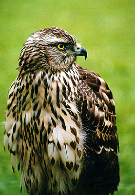
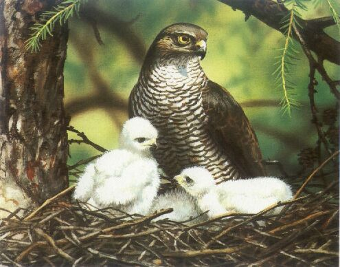
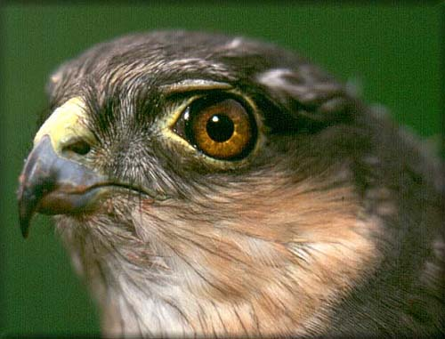
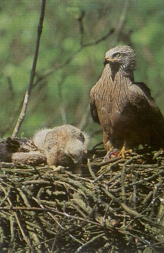
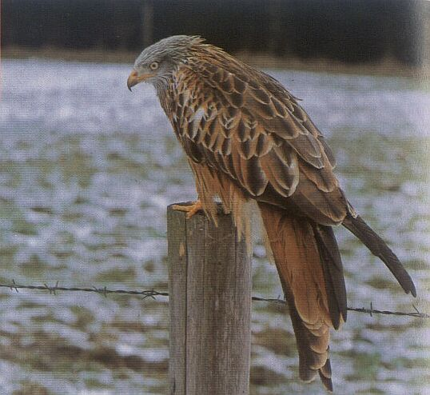
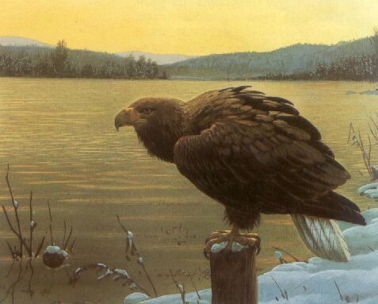
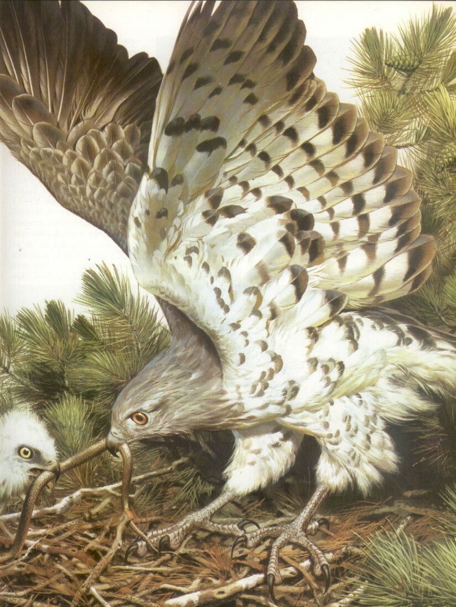
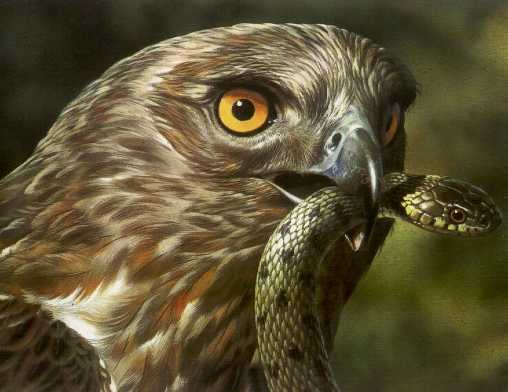
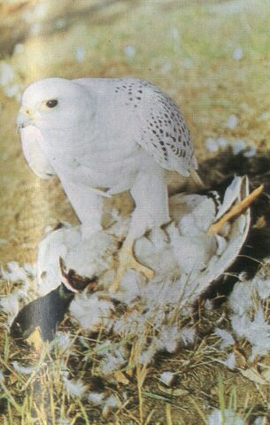
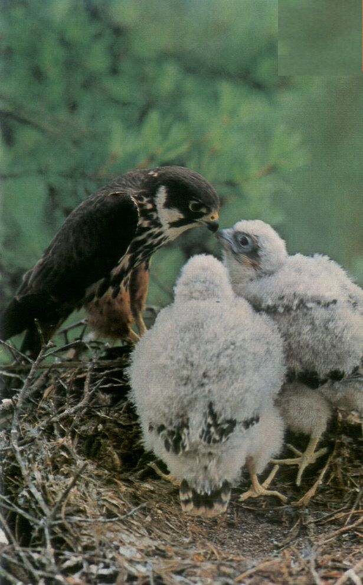

Gatunki ptaków drapieżnych
JASTRZĄB - Accipiter gentilis

Upierzenie obu płci jest mniej więcej jednakowe. U osobników dorosłych na szarobiałym spodzie ciała znajdują się poprzeczne, ciemne przepaski. Ptaki młode w pierwszym upierzeniu różnią się wyraźnie od dorosłych. Długość ciała samców wynosi 520-560, samic 600-645 mm. Sylwetka siedzącego ptaka jest dosyć smukła. Charakteryzuje się małą głową i długim wąskim ogonem. Skrzydła są krótkie nie sięgające do połowy długości ogona, zaokrąglone z palczasto rozstawionymi przednimi lotkami. Lecący jastrząb wykonuje na przemian kilka szybkich uderzeń skrzydłami, oddzielonych chwilą bezruchu.Jastrząb poluje w charakterystyczny sposób chwytając w locie swe ofiary od dołu. Pokarmem jastrzębia są głównie ptaki średniej wielkości: jarząbki, citrzewie, bażanty, kuropatwy, głuszce, gołębie, krukowate, ptactwo domowe. Z ssaków chwyta przeważnie młode zające i wiewiórki. Jastrząb ma wielką zdolność przyspieszania, ale max. prędkość jest w stanie utrzymać tylko na dystansie około 500 m. Dużą zdobycz zostawia na miejscu, kiedy zgłodnieje powraca do niej.Jastrząb buduje swe gniazdo na dużym drzewie, na wysokości 15-20 m. Na wierzch konstrukcji ptaki znoszą zielone liście. Jeżeli gniazdo wykorzystywane jest kilka lat z rzędu, jego wysokość i średnica mogą dochodzić do 1 m. W ciągu 50 dni jastrzębia rodzina złożona z dwojga rodziców i trójki młodych, może zjeść około 275 małych zwierząt. Ważą one w sumie 57 kg. Dorosłemu ptakowi potrzebne jest codziennie 160 g. porzywienia, a młodemu w okresie najszybszego wzrostu 195 g. Mimo niewielkich rozmiarów, jastrząb, zwany gołębiarzem, jest jednym z najsilniejszych europejskich ptaków drapierznych. Chwyta zwierzęta, których ciężar najczęściej wynosi 175-500 g. Poluje w lasach, na polach i łąkach, nad stawami, w górach nawet powyżej 1500 m. oraz na równinach. Chcąc zaskoczyć ofiarę zręcznie manewruje wśród drzew lub leci tuż nad ziemią. Czasem od razu atakuje stado ptaków usiłując któregoś pochwycić. Obecność jastrzębia dowodzi bogactwa i różnorodności fauny, ponieważ jego menu musi być bardzo urozmaicone. Poza tym jastrzębie osiedlają się w dużej odległości od siebie, gdyż każda pora potrzebuje bardzo rozległego terytorium - od 3000 do 5000 hektarów. Jego głos to dość chrapliwe i niemelodyjne "kjek kjek kjek kjek kjek kjek" wydobywany z nieco zmienną wysokością tonu. Jastrząb nie powoduje wyginięcia gatunków na które poluje. Gdyby było inaczej sam musiałby już dawno zginąć. Obecnie w wielu regionach występuje rzadko, przyczynili się do tego ludzie: hodowcy gołębi pocztowych, myśliwi, którzy nigdy nie lubili konkurencji, wydaje im się, że mogą go zastąpić ale to tylko złudzenie...KROGULEC - Accipiter nisus


Upierzenie samca i samicy jest podobne do upierzenia jastrzębia. U samca pręgi na spodzie ciała są rdzawe lub rdzawoszare, u samicy ciemnobrązowe lub szarobrązowe. Tęczówka krogulca, początkowo szaroczarna, z czasem robi się jasnożółta, a później pomarańczowa. Łapy są dośc cienkie i długie. Patrząc na dorosłego ptaka od dołu, można go poznać po ciemnych, poprzecznych pręgach na tyłowiu. Długość ciała samca wynosi 313-340, samicy 370-410 mm. Sylwetka siedzącego ptaka, sylwetka w locie i sposób lotu są podobne jak u jastrzębia. Widząc samca przy boku samicy można by sądzić, że to ptasi karzeł. Różnicę tę tłumaczy fakt iż krogulec żywi się wyłącznie ptakami. Gdyby jedna para polowała na te same gatunki, mogłoby wkońcu dojść między nimi do rywalizacji. Samica, która jest silniejsza chwyta więc gołębie, sujki, drozdy i kosy. Natomiast łupem samca padają głównie ptaki wielkości wróbla. Krogulec jest mistrzem w polowaniu na wyżej wspomniane gatunki. Najczęściej zaskakuje swe ofiary szybkością. Zręcznie porusza się w poszyciu leśnym i prześlizguje wśród gałęzi drzew. tryb życia prowadzi dość skryty i dlatego jest on trudny do obserwacji. Najłatwiej można go zobaczyć w czasie jesiennego i zimowego żerowania na otwartych polach Wiele krogulców żyjących na wschodzie i północy Europy wędruje - we wrzesniu i październiku odlatują na południowy zachud, by powrócić w marcu lub kwietniu. W innych regionach większość tych ptaków prowadzi osiadły tryb życia. Dorosłe krogulce przez cały rok pozostają na swym terytorium, obejmującym pola, jak i łąki. Obszar ten zajmuje średnio 700-1000 hektarów. W kwietniu samiec i samica budują swe gniazdo. Mieści się ono na świerku lub sośnie, a zbudowane jest z suchych gałązek. Znajduje się zazwyczaj niżej niż gniazdo gołębiarza i myszołowa, znacznie od nich mniejsze, a w porównaniu z gniazdem kobuza i pustułki o wiele bardziej płaskie. W maju pojawia się w nim 4-6 jaj. Młode ptaki niemal że nie różnią się ubarwieniem od rodziców. Jego głos jest dość jękliwy i przeciągły "kee kee kee kee", powtarzane kilkakrotnie. Odzywa sięrzadko, przeważnie tylko wtedy, gdy niepokojony jest w pobliżu gniazda.BŁOTNIAK ZBOŻOWY -Circus cyaneus
U samca wierzch ciała, głowa, szyja i skrzydła do lotek pierwszego rzędu oraz pierś są popielatoszare. Samica ma wierzch ciała ciemnobrunatny, spód jaśniejszy. Wspólną cechą upierzenia obu płci są białe pokrywy nadogonowe, tworzące wyraźnie widoczną plamę. Jak wszystkie błotniaki, obie płci mają wokół oczu szlarę. Jego długość wynosi 43-50 cm, rozpiętość skrzydeł 103-110 mm, ciężar wach się między 535 g. a 550 g. Błotniak zbożowy widziany z góry różni się od błotniaka łąkowego brakiem czrnej pręgi na skrzydłach, ciemnych plamek na brzegach ogona oraz masywniejszą sylwetką. Mają długie i cienkie łapy. Błotniak zbożowy występuje na łąkach, polach, wrzosowiskach i bagnach. Lecąc z niewielką prędkością (ok. 15 km/h) parę metrów nad ziemią wypatruje różnego rodzju zwierząt. Przede wszystkim polne myszy, rzadziej ryjówki i małe zające. Atakuje także dorosłe ptaki. Jest bardzo zręczny, potrafi zawrócić w miejscu i momentalnie uderzyć na ofiarę, którą spostrzegł w ostatniej chwili. Stosuje również inną metode. Siada obok nory jakiegoś gryzonia i czeka, aż ten wyjdzie na zewnątrz. Błotniak zbożowy buduje gniazdo na ziemi. Zebraniem budulca zajmuje się głównie samica.
BŁOTNIAK POPIELATY -Circus pygargus
Samiec jest podobny do błotniaka zbożowego, jedynie grzbiet ma odcień ciemniejszy, a na lotkach II rzędu znajdują się dwie poprzeczne pręgi. Plama u nasady ogona jest mniej wyraźna. Samica jest bardzo trudna do odróżnienia od samca błotniaka zbożowego. Długość ciała samca wynosi 410-465, samicy 470-520 mm. Zarys sylwetki i sposób lotu są identyczne jak u Błotniaka zbożowego. Ptak ten jest nielicznym, a miejscami bardzo nielicznym ptakiem lęgowym na niżu. Najliczniej występuje nad Biebrzą i Kanałem Augustowskim. Biotopem tego gatunku jest otwarty krajobraz i wilgotne obszary: łąki, błota, pola i doliny rzek. Żywi się drobnymi ssakami, chwyta również gnieżdżące się na ziemi drobne ptaki oraz zjada ich pisklęta i jaja.BŁOTNIAK STAWOWY -Circus aeruginosus
Samiec ma głowę jasnobrązową, grzbiet ciemnobrunatny, ogon rdzawoszary. Środkowa część skrzydła jest jasna. Samica ma grzbiet czekoladowobrunatny, głowę i potylicę białe lub kremowobrązowe. Długość ciała samca wynosi 490-543, samicy 520-600 mm. Przy obserwacji górnej powierzchni ciała na skrzydłach samca w środkowej części, widać jasną, dość szeroką smugę. Samica ma jasną głowę i przednią krawędz skrzydeł przy nasadzie. Jest to nieliczny, a miejscami średnio liczny ptak lęgowy na niżu. Biotopem jego są zarosłe trzcinami brzegi jezior, stawów i rzek. Pokarmem błotniaka stawowego są głównie ptaki, a przedewszystkim wysiadujące jajka samice kaczek, łysek perkozów i kulików. Zjada on również jaja oraz pisklęta powyższych gatunków. W mniejszym stopniu żywi się gryzoniami, gadami i owadami.Poza wymenionymi gatunkami można spotkać w Polsce błotniaka białego i błotniaka łąkowego.
KANIA CZARNA - Milvus migrans

Obie płci są podobnie ubarwione. Ogólny tom upierzenia jest ciemnobrunatny. Długość ciała samca i samicy wynosi 550-640 mm. W sylwetce ptaka siedzącego charakterystyczne są widłowate wycięcia ogona i skrzydła sięgające do jego końca. W sylwetce ptaka lecącego najbardziej charakterystyczną cechą jest widłowato wycięty ogon. Głębokość wycięcia jest u tego gatunku niewielka, zwykle okołe 4 cm. Kania lata powoli i manewruje przy tym dość intensywnie ogonem. Zsięg występowania kani czarnej w okresie lęgowym oraz w zimie to południe od sahary. Wiosną po powrocie z Afryki, zjawiają się nad jeziorami, stawami, rzekami, czasem w okolicy nadmorskiej, tam gdzie są drzewa odpowiednie do założenia gniazda. Buduje je na wysokim drzewie liściastym (dąb, buk, brzoza) lub iglastym (świerk, sosna, jodła) zwykle od 10-30 metrów. Kania czarna poluje przedewszystkim na zwierzęta poruszejące się wolno lub ranne. Nie gardzi też padliną. Znaczące miejsce w jwj menu stanowią ryby. Nie nurkuje po nie do wody, co najwyżej zanuża łapy. Resztę pożywienia zdobywa na polach i łąkach. Żywi się również dużymi owadami. Kania czarna ma niewielu naturalnych wrogów, głownie jastrzębie i puchacze. Charakteryzuje się niską rozrodczością, która uniemożliwia zwiększenie się populacji tych ptaków. Zdarza się też tak, że z powodu braku pokarmu starsze piskle zjada młodsze.KANIA RUDA - Milvus milvus

Obie płci są podobnie ubarwione. Ogólny ton upierzenia jest rdzawobrunatny. Długość ciała wynosi 590-660 mm. Sylwetka i sposób latania są podobne jak u kani czarnej, jednakże u kani rudej wcięcie ogona jest znacznie głębsze (10 cm), a na spodzie skrzydeł znajduje się biała plama. Kania ruda jest w Polsce skrajnie nielicznym gatunkiem lęgowym. Biotopem tego drapieżnika są lasy starszych klas wieku, poprzecinane polami uprawnymi lub innymi terenami odkrytymi. Pokarm kani rudej jest podobny do diety poprzedniego gatunku, jednak w miejszym stopniu jest on zdobywany nad wodami.BIELIK - -Haliaeetus albicilla L.

Obie płci są jednakowo ubarwione. Upierzenie ma kolor brunatny, jedynie szyja i głowa są jasnobrunatne, a ogon czysto biały. U osobników młodych ogon jest szarobrunatny. Długość ciała samca wynosi 755-900, samicy 855-980 mm. Rozpiętość skrzydeł wynosi od 2 do 2,65 m, ciężar 3,5-6,8 kg. Charakterystyczne dla niego są długie i szerokie skrzydła z palczasto rozstawionymi lotkami I rzędu. Bielik jest drapieżnikiem większym od orła przedniego. W locie jego sylwetka jest łatwa do rozpoznania ze względu na krutki ogon i długie skrzydła. Mimo ciężkiego wyglądu, lata zręczniej i szybciej niż można by sądzić. Sporo czasu spędza siedząc na ziemi lub na jakimś słupie, wypatrując ptaków, na które mógłby zapolować. W tej pozycji odpoczywa również po jedzeniu. Bielik, podobnie jak rybołowy, nie waha się zanurzyć w wodzie, aby pochwycić zdobycz. Dorosły osobnik prowadzi osiadły tryb życia, natomiast młode do czasu, kiedy będą się same rozmnażać ( ok. 5 lat ), wędrują. Z Norwegii lecą na południe, do Niemiec, Polski i Środkowej Europy. Bielik żywi się głównie żywymi zwierzętami, które chwyta po dłuższym lub krutszym pościgu. Poluje przedewzystkim na ptactwo wodne. Taktyka łowów polega na nękaniu znajdujących się na wodzie ptaków i zmuszaniu do ciągłego nurkowania, co powoduje ich wyczerpanie. Czasem lecąc tuż nad wodą, atakuje znienacka. Bielik chwyta również ryby, bielaki i inne ssaki do wielkości psa, nie gardz także padliną.ORZEŁ PRZEDNI -Aquila chrysaetos L.
Oba ptaki są jednakowo ubarwione. Ogólny ton upierzenia jest jasnobrunatny. Na końcu ogona znajduje się dość szeroka, czarna przepaska. Reszta ogona, około 2/3 od nasady, jest ciemnoszara. Ptaki młode są ciemniej upierzone, nasadę ogona mają brudnobiałą. Ostateczne upierzenie uzyskują po 5 latach. Do tego czasu stopniowo przybierają one upierzenie ostateczne. Długość ciała samca wynosi 820-850, samica 910-930 mm. Nogi jego są mocno umięśnione. Charakterystyczną cechą rozpoznawczą jest lekkie zaokrąglenie ogona i czarna, szeroka przepaska na jego końcu, szczególnie dobrze widoczna u ptaków młodych, które ponadto mają białą plamę na spodzie skrzydeł. Orzeł przedni jest w Polsce gatunkiem skrajnie nielicznym. Stan populacji szacuje się na 8-10 par. Lęgnie się jedynie w Karpatach i na Mazurach. Jest to ptak związany z terenami skalistymi i obszarami otwartymi. Pokarmem tego gatunku są ssaki średniej wielkości, od wielkości zająca do lisa, i duże ptaki od wielkości głuszca. Wyjątkowo orzeł ten napada również większe ssaki.
ORLIK GRUBODZIOBY - Aquila clanga Pallas
Obie płci są jednakowo, ciemno-purpurowo-brunatno ubarwione, spodem jaśniejsze. Pokrywy nadogonowe są białe. Jego długość zarówno samca jak i samicy wynosi 660-720 mm. Zarys sylwetki w locie jest podobny do sylwetki lotu orła przedniego.Jest bardzo nielicznym gatunkiem, lęgowy głównie na wschodzie kraju. Biotopem orlika są rozległe, starsze lasy z terenami wilgotnymi i zbiornikami wodnymi. Pokarm stanowią drobne ssaki do wielkości zająca i ptaki do wielkości cietrzewia. Innym gatunkiem, którego nie można odróżnić w warunkach polowych jest ORLIK KRZYKLIWY - Aquila pomarina (Brehm). Długość obu płci wynosi 630-650 mm. pozostałe dane są takie same, jak u orlika grubodziobego.ORZEŁEK POŁUDNIOWY - Hieraaetus fasciatus
Podobnie jak inne, niektóre ptaki drapieżne, orzełek poludniowy może być ubarwiony w dwojaki sposób i nie ma to nic wspólnego z jego wiekiem czy płcią. Część ptaków ma spód ciała biały, a pierś ozdobioną ciemnobrązowymi cętkami. Natomiast u innych orzełków południowych ten fragment upierzenia jest biały. Długość jego wynosi 650-720 mm, rozpiętość skrzydeł 1,5-1,7 m, a ciężar dochodzi do 2 kg. Niektórzy nazywają go "orłojastrzębiem", gdyż łączy on w sobie siłę orła przedniego z szybkością jastrzębia. Polując, pikuje na upatrzoną z daleka zwierzyne lub, gdy są to ptaki, zręcznie ściga je wśród drzew. Żywi się głównie dzikimi królikami. Uzupełnienie jego jadłospisu stanowią kuropatwy, kawki, gołębie.W wieku dorosłym prowadzi osiadły tryb życia, terytorium jakie zajmuje dochodzi do 10000 hektarów. Gniazdo buduje z gałązek na wysokich dominujących skałach.KURHANNIK - Buteo refinus
Sylwetką przypomina dużego myszołowa. Jego charakterystyczną cechą jest cynamonowoczerwony ogon, widoczny takze w locie. W suchych latem stepach Azji zajmuje ten sam biotop, co w Europie myszołów. Jego obszar leęgowy sięga w Europie do Macedonii, natomiast w północnej Afryce żyje inny podgatunek kurhannika. Gniazdo zakłada przeważnie w ścianach wąwozów skalnych, przecinających stepy, czasem w grotach, wśród krzewów, rzadko na drzewach. Chętnie zajmuje opuszczone gniazda kruków, ale sam też buduje. Jaja, zwykle dwa, mają około 20 mm , są białe z brązowymi plamami. Wysiadywanie zaczyna sie w kwietniu lub na poczatku maja, a w końcu czerwca młode są już zdolne do latania. Właśnie wtedy w stepie wskutek suszy zamiera życie. Kurhanniki odlatują więc w okolice gdzie utrzymało się jeszcze troche wody i zieleni. Nie są jednak typowymi ptakami wędrownymi, które całkowicie znikają z terenów lęgowych, lecz koczownikami. Jest bliskim krewnym naszego myszołowa i tak jak on, poluje głównie na drobne, stepowe gryzonie. Wypatruje je z miejsca czatówlub w czasie powolnego lotu szybowcowego.MYSZOŁÓW ZWYCZJNY -Buteo buteo L.
Obie płci są jednakowo ubarwione. Ubarwienie jest zmienne: od ciemnobrązowego do jasnokremowego. Piersi są podłużne strychowane. Brzuch jest jasny. Złożone skrzydła sięgają poza połowę długości ogona. długość somca i samicy wynosi 460-550 mm. Sylwetka ptaka w locie charakteryzuje się szerokimi skrzydłami i szerokim ogonem, na spodzie którego znajdują się liczne wąskie przepaski. Myszołów jest licznym ptakiem lęgnącnym się na terenie całego kraju. Środowiskiem jego są lasy, zwykle ich obrzeża, lub obrzeża enklaw leśnych. Pokarmem myszołowa są drobne gryzonie, młode osobniki gatunków łownych np. cietrzewie, kuropatwy, drobne wróble, ponadto gady i owady. W okresie jesiennozimowym na teren Polski zalatuje ze wschodu MYSZOŁÓW WŁOCHATY - Buteo logopus. Charakterystyczną cechą rozpoznawczą włochatego jest ciemna przepaska na brzuchu, ciemna plama w okolicy stawu nadgarstkowego oraz opierzenie nogi do początków palców.
PUCHACZ - Bubo bubo
Puchacz góruje nad wszystkimi innymi ptakami drapieżnymi. Wydaje się, że jest on silniejszy od orła przedniego i bielika. W jego jadłospisie można znaleść sokoła wędrownego, jastrzębia, myszołowa i niemal wszystkie europejskie sowy. Ta największa na świecie sowa ( długość 570-720 mm, rozpiętość skrzydeł 150-180 cm, cięzar 2-3,2 kg.) żywi się także głuszcami, dikimi kaczkami, królikami i zajęcami. Puchacz poluje nocą na terenie od 1000-5000 hektarów. W Eropie zamieszkuje góry i lasy półnicnej części kontynętu. Jego obecność świadczy o bogatej faunie, gdyż żywi się on wieloma gatunkami zwierząt. Jej płowe, cętkowane upierzenie zlewa się z otoczeniem tak, że trudno jest ją dostrzec. Podobnie jak wszystkie drapieżne ptaki nocne, puchacz wypluwa nie strawione resztki pożywienia zwane wypluwkami. W środkowej i południowej europie puchacz poluje na wrony, dzikie króliki, jeże, wiewiórki oraz na różne gatunki gryzoni.GADOŻER - (krótkoszpon) - Circaetus gallicus (Gmelin)


Prawdopodobnie drapieżnik ten jest całkowicie odporny na jad węży. Latem można zaobserwować go jak poluje nie tylko na zaskrońce, ale i na żmije , które stanowią główny składnik jego pożywienia. Zręcznie unika zębów jadowitych żmii, unieruchomiając od razu jej głowę. Rodzaj pokarmu wpływa na styl jego życia. Jest on ptakiem wędrownym. W końcu marca, gadożer pojawia się w Europie na terenach o klimacie umiarkowanym, we wrześniu odlatuje do Afryki. Drapieżnik przebywa chętnie w okolicach pagórkowatych, kamienistych, tam gdzie duże przestrzenie porośnięte są zaroślami, trawą, karłowatymi drzewmi i rzadkim lasem. Gadożer wykorzystuje prądy unoszącego się powietrza i szybując wypatruje zdobyczy.Samo polowanie zaczyna dopiero późnym rankiem. Unosi się w powietrzu nie poruszając skrzydłami, które zależnie od kierunku i szybkości wiatru rozpościera lub częściowo składa. Jego tereny łowieckie rozciągają się w promieniu 10 km od gniazda. Kiedy zobaczy ofiarę, rzuca się na nią albo pikuje z wysokości kilkuset metrów, a jego prędkość przekracza wtedy 100 km/h. Chwyta węże różnego gatunku: zaskrońce zwyczajne, gniewosze plamiste, żmije żebrowane i zygzakowate, których wielkość wacha się od kilkudziesięciu centymetrów do 1,80 m. Oprócz węży żywi się także padalcami i jaszczurkami. Krótkoszpon widziany z ziemi jest większy od myszołowa. Poza tym jest jasno upierzony, jedynie gardło jest no ogół brązowe. Łapy ptaka są koloru szarego. Pod koniec kwietnia, samica znosi tylko jedno duże jajo, koloru białego. Przyczyną tak niskiej płodności jest żarłoczność piskląt -dwa dorosłe ptaki nie byłyby w stanie nakarmić kilku młodych.SĘP PŁOWY I SĘP USZATY - Gypus fulvus L.
Niektóre sępy dorównują rozmiarammi orłosępowi. Czasem są nawet cięższe. Natomiast rozpiętość skrzydeł może być mniejsza niż u orłosępów żyjących w środkowej Azji. Skrzydła tych ptaków miewają nawet 90 cm długości, podczas gdy u sępów nie przekraczają 75 cm. Sęp płowy należy do najlepiej szybujących ptaków. Kiedy są złe warunki atmosferyczne, trudno jest mu wzbić się wyżej, mimo dużego wysiłku. Natomiast w czasie ładnej pogody wykorzystuje prądy cieplego powietrza, które unoszą go w górę. Jedną trzecią dnia spędza na szybowaniu z nieruchomo rozpostartymi skrzydłamni. Duże skrajne lotki są wyraźnie od siebie oddzielone, pod wpływem ciepłego powietrza, zadarte ku górze. Jeżeli spojrzć na ptaka z boku, widać, że skrzydła są lekko uniesione, a cała jego sylwetka przywodzi na myśl literę V. Szukając pożywienia, sęp płowy leci dość nisko, natomiast kiedy się naje, wzbija się bardzo wysoko. Widziano go na wysokości 4500, a nawet 5570 m. Szybując, obserwuje doliny i zbocz gór, w których żyje. Wypatruje tam padliny, stanowiącej jego jedyne pożywienie. Szukając pożywienia nie posługuje się węchem, tylko doskonałym wzrokiem. Najbardziej wygłodniałe osobniki dominują nad pozostałymi. Dzięki olbrzymiemu dziobowi, łatwo dostaje się do wnętrzności padłego zwierzęcia. Posiłek nawet wystarczy na tydzień albo i na dłużej. Sęp jest ptakiem stadnym, żyjącym w grupach. Często zakłada gniada w większych lub mniejszych koloniach. Kolonie sępów mieszczą się na skalnych urwiskach. Część ptaków pochodzących z Europy, odlatuje jesienią do Afryki.ŚCIERWNIK - Neophron percnopterus L.
Ścierwnik za pomocą kamienia potrafi rozbić cudze jajo(flamingów, strusi, pelikanów), by dostać się do jego wnętrza, lecz są one tylko uzupełnieniem jego podstawowego pokarmu. Ptak ten żywi się bowiem głównie padliną, i to wszelkiego rodzaju. Jest to z pewnościa jedyny ptak zjadający regularnie ekstrementy ssaków. Pojawia się nad rzekami i stawami, na śmietnikach i przy szosach, gdzie wiele zwierząt ginie pod kołami samochodów. W Europie gnieździ się pod osłoną skalnych nawisów. Na Bliskim Wschodzie na budynkach.SOKÓŁ WĘDROWNY - Falco peregrinus (Tunstall)
Samiec jak i samica są upierzone podobnie. Na bokach głowy i szyi ma czarny wąs, na piersi czarne plamy i dosyć długie srzydła sięgające do końca ogona. Długość ciała wynosi 38-50 cm, rozpiętość skrzydeł waha się od 85 do 115 cm, ciężar 580-1000 g. To najszybszy ptak na świecie. Prędkość, mierzona niektórym osobnikom podczas pikowania wynosi 270 a nawet 320 km/h. Kiedy sokół ten rzuca się na ofiarę, bez trudu przechodzi w locie poziomym z 50 do 100 km/h. Jeisenią prawie wszystkie osobniki, młode i dorosłe, zamieszkałe na północy Europy, odlatują na zimę na zachód kontynętu albo jeszcze dalej. Spośród ptaków żyjących gdzie indziej przemieszczają się tylko młode, dorosłe prowadzą raczej osiadły tryb życia. Podobnie jak inne bardzo szybkie ptaki sokół wędrowny ma krępą sylwetkę. Wędrowny uderza skrzydłami silnie i szybko, zamachy nie są jednak zbyt głębokie. Sokół ten poluje na ptaki m.in. gołębie, szpaki, czajki, mewy śmieszki, drozdy, sójki, skowronki polne, kosy i zięby. Swoje ofiary chwyta w locie. Często chwyta zdobycz po kilkusetmetrowym, a nawet ponadkilometrowym, locie nurkowym. Zbija je uderzeniem szponów w tył głowy. Sokłół wędrowny gnieździ się wśród nadmorskich skał, w górach i na wyżynach. W północnej Europie zajmuje nieraz nadrzewne gniazdo pożucone przez innego ptaka drapieżnego. W niektórych krajach europejskich, także w Polsce stał się już rzadkością. Przyczyn tego jest kilka. Po pierwsze, ptak ten był prześladowany przez człowieka, po drugie, sokół żywił się w pewnych regionach ptakami, których pokarmem były nasiona lub owady skażone pestycydami.BIAŁOZÓR - Falco rusticolus L.

Rozpiętośc skrzydeł do 140 cm. Młode ptaki brązowawe, dorosłe szare-w różnych odcieniachdo prawie czystej bieli, z czarnymi plamkami. Zmiaszkuje skaliste wybrzeża mórz, chętnie w okolicy ptasich koloni lęgowych oraz w miejscach bytowania pardw. Gniazduje się na początku kwietnia do maja, znosi do 5 jaj, które wysiadywane są przez samicę (28 dni). Młode opuszczają gniazdo po 50 dniach. Głównym pożywieniem białozorów są morskie ptaki latem, zimą pardwy, zabijane w powietrzu, wodzie i ziemi. Im bardziej na północ, tym bielsze są tam białozory. Stan liczebny niewielki.RARÓG GÓRSKI - Falco biarmicus L.
Brązowy sokól wielkości wrony z rdzawym czubkiem głowy i cienkim wąsem.Samica jest wyraźnie większa od samca. Wszędzie gdzie występuje jest ptakiem rzadkim, ze względu na potrzebe dużego terytorium, poza tym tępiony przez ludzi. W locie trudno odróżnić go od raroga. Lęgnie się w górach, gniazda w niższych skalnych, w przejętych gniazdach innych ptaków na drzewach, a na bezludnych pustkowiach także na ziemi. Żywi się ptakami do wielkości gołębia, zabija je w powietrzu i na ziemi. Często para poluje wspólnie: jeden partner płoszy ptaki z ziemi, drugi goni i chwyta je.RARÓG - Falco cherrug L.
Brązowawy sokół z jasną głową i ledwie widocznym wąsem. Jako"obywatel" wolnych przestrzeni powietrznych, nie jest związany z żadnym szczególnym biotopem, raczej z miejscemlicznego wysępowania ptaków. Najbardziej wysunięte na zachód miejsca lęgowe znajdują się w lasach nad Dunajem, w głębi Austrii, często w koloniach czapli i kormoranów. W Europie jest to bardzo rzadki ptak lęgowy. Jak wszystkie sokoły, nie buduje gniazda. Jeśli gniazduje wśród skał, uparcie trzyma się raz wybranego miejsca, jeśli na drzewie- przejmuje puste, nie zniszczone zimą gniazda innych ptaków. Niektórym parą jednak brakuje miejsca i potrafią wtedy przepędzić z gniazda nawet orła cesarskiego czy bielika. Ale gniazdo bocianie musi raróg opuścić, gdy powróci do niego z Afryki prawowity własciciel uzbrojony w lancetowaty dziub. Jeśli raróg zagnieździ się w kolonii czapli lub gawronów ma zapewnione pożywienie. Jest bardzo wszechstronnym myśliwym. Poluje na ziemi i w powietrzu, czasem w locie nurkującym, czasem z zaskoczenia, czasem w pogoni za ofiarą. Jego łupem padają zwierzęta do wielkości królika lub kaczki.KOBUZ - Falco subbuteo L.

Jest to niezbyt liczny gatunek lęgowy w całej Polsce, objęty ścisłą ochroną, znacznie mniej liczny niż pustułka. Na zimę odlatuje. Przylot - w końcu kwietnia i początku maja, odlot - we wrześniu i pażdzierniku. Kobuż osiedla się na skrajach lasu, zazwyczaj iglastych, przyległych do pól, rzadziej w miejszych śródpolnych kępach drzew. Gnieździ się na wierzchołkach wysokich drzew, zajmując zazwyczaj stare gniazda większych ptaków. Poluje wyłącznie na niewielkie ptaki, które chwyta w locie, rozpoczynając atak ze znacznej odległości. Dlatego wypatruje je wyłącznie na rozległych, otwartych przestrzeniach, a nie wśród drzew jak krogulec. Bardzo szybki, lecz mało zwrotny lotnie pozwala mu chwytać zdobyczy na ziemi, dlatego w skład jego pokarmu nie wchodzą żadne ssaki, natomiast niekiedy, większe owady. Daje się obserwować na otwartej przestrzeni znacznie częściej niż krogulec. Lata bardzo szybko, jest wstanie złapać jaskółkę, a przelatując blisko człowieka, niemal nie sposób go dostrzec, słyszy się jedynie furkot jego skrzydeł. Jego sylwetka w locie różni się od sylwetki krogulca znacznie dłuższymi, ostro zakończonymi skrzydłami. W locie przypomina jerzyka lub oknówkę. Ma dość melodyjny i dzwięczny głos. Nieco przeciągłe "kije kije kije".PUSTUŁKA - Falco tinnunculus
Nazwa pustułka pochodzi od rosyjskiego "pustoj" - czyli głupi i została jej nadana przez sokolników, jako gatunkowi, który nie da się ułożyć do polowania na ptaki, a więc jak mniemano jest zbyt głupi żeby się tego nauczyć. Oczywiście nieprzydatność jej do polowania na ptaki jest uwarunkowana, typu lotu oraz sposobu chwytania zdobyczy. Samiec ma głowę i kark szare, grzbiet rdzawy, pokryty trójkątnymi plamami, ogon szary z szeroką czarną przepaską na końcu. Samica ma głowę, kark, wierzch ogona ceglastorude. Na wierzchu ciała i ogona znajdują się brunatnoczarne, poprzeczne pręgi. Na końcu ogona znajduje się czarn przepaska. Spód ogona jest białawy. Pustułka ma dość krótkie i niezbyt mocne łapy. Górna, zakrzywiona część dzioba zachodzi na część dolną. Oczy ptaka są ciemnobrązowe. Charakterystychną cechą rozpoznawczą pustułki w locie, jest szeroka czarna przepaska na końcu jasnego ogona. W locie pustułka często zawisa nad jednym miejscem z opuszczonym ku dołowi ogonem i uniesionymi, poruszającymi się dość szybko skrzydłami. Jeżeli w tym czasie dostrzeże jakiegoś gryzonia czy inne małe zwierze, pikuje w dół. Często atak się nie udaje. Wówczas ponownie unosi się nad polem czy łąką i powtarza ten manewr. W Europie jest jednym z najczęściej spotykanych ptaków drapieżnych. Występuje w okolicach, w których roślinność nie jest zbyt wysoka, zjawia się również w środku miast.Pustułki żyjące w miastach siadają często na wieżach kościołów. Stamtąd, ponad zgiełkiem ulicy, dochodzą ich przenikliwe głosy. Łupem miejskich pustułek padają przedewszystkim wróble i szpaki. Pustułka żyjąca na polach żywi się głównie polnymi myszami, które stanowią 70% jej pokarmu. Pustułka, zamieszkująca północ i północny-wschód Europy, jest ptakiem wędrownym. Jesienią odlatuje do cieplejszych krajów. Migracje odbywają się głównie we wrześniu. W maju lub już pod koniec kwietnia, samica znosi w gnieździe 5-6 jaj. Samiec karmi ją już w okresie poprzedzającym zniesienie jaj, robi to do czasu,aż młode będą miały 10 dni. Jej głos to dośc wysokie, szybko powtarzane "kijkijkijkij" lub "kliklikli". Odzywa się najczęściej w locie.Literatura i Ilustracje:
W. Dudziński - Ptaki łowne
Ptaki drapieżne Europy - Ilustracje Carl Brenders
F. Sauer - Ptaki lądowe